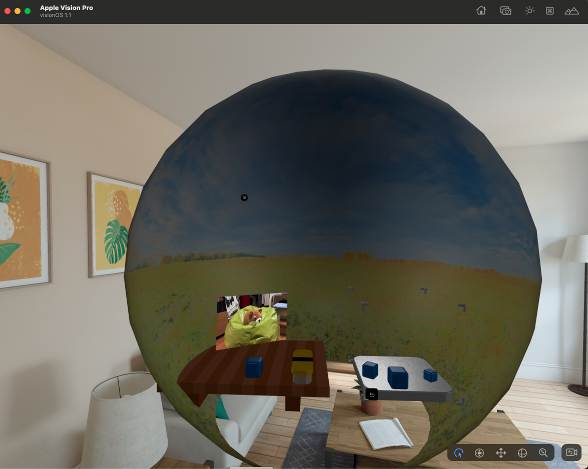
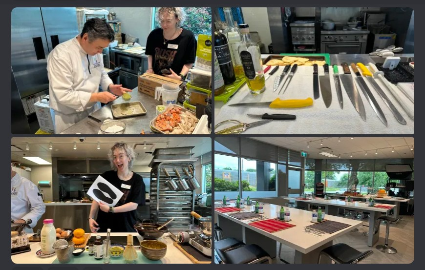
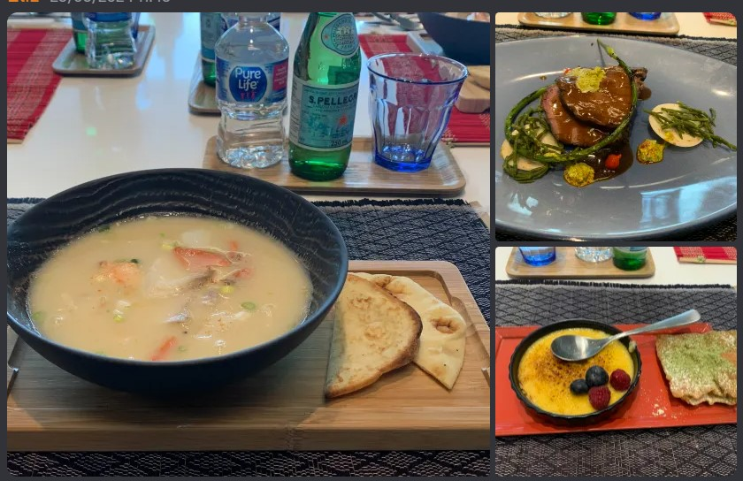

This is a client project that I worked on with 7 other team members for the innovative startup Love on a Plate. The prototype is an immersive mixed reality experience designed to be showcased in Apple Vision Pro using Unity. This 6-7 minute experience dives into the culinary journey of Chef Nagata, highlighting the intricate process of cooking crème brûlée. The project leverages cutting-edge mixed reality technology to blend digital and physical worlds, offering users an engaging and educational culinary narrative.
After our initial client meeting and debrief, our team began researching both the technology and artistic elements of the project. Given the technical limitations of the emerging technology and our lack of prior experience, we dedicated time to learning and researching to define the project’s scope and clarify our vision. Our narrative designer collaborated closely with the client to translate their ideas into a cohesive script and story centered on the chef character. Meanwhile, our UX designer focused on mapping the experience by scene, ensuring alignment with the narrative.
Our technical research involved extensive trial and testing as we set up the project environment. We explored compatible Xcode and Unity versions and configured visionOS within Xcode. We tried to use the debug tool Play to Device but found many limations to it. We learned how to deploy the project to the apple vision pro device. And of course we played around with Vision Pro and get familiar with the eye gazing and gazing, etc.
We experimented with Unity's PolySpatial Tools to effectively support visionOS functionality and assessed the feasibility of specific interactive features. For instance, we utilized Apple Vision Pro’s pinch gesture to simulate actions like sprinkling sugar, and we worked with the XR Interaction Toolkit to implement additional gestures, such as grab interactions.
Additionally, we developed methods for seamless transitions between Mixed Reality (MR) and Virtual Reality (VR), including techniques like a simulated skybox, and experimented with fading spatial videos to enhance overall user immersion.
There are lots of limitations implementing for vision pro in Unity. For example, particle effects and visual effects are working fine in Unity but not in VP. We had to customize shader graphs to be able to see the visual effects in VP.
While our entire project process was more about learning as we progressed, we ultimately implemented three key features:
User Interactions:
This included gestures like pinching, pressing the bell, grabbing oranges, and sprinkling sugar.
Spatial Videos:
We created engaging spatial videos that narrated the chef's cooking journey and provided background stories.
Smooth Transitions:
We ensured seamless transitions between Mixed Reality (MR) and Virtual Reality (VR) experiences, enhancing overall immersion.
To facilitate future development, we created a VisionOS Development Guide for our client. This comprehensive guide includes step-by-step guidance on configuring the project environment. See TDD.
To enhance clarity and streamline the development process, we established a naming convention for the scenes. This convention includes scene numbers and main identifiers, making it easier to differentiate and locate scenes within Unity. Given that our MR project incorporates both mixed reality and simulated VR environments through the use of fake skyboxes, we structured the scenes to reflect both narrative segments and significant environmental changes. Scenes are categorized based on narrative progression and major environmental changes, such as skybox transitions. This structure enables developers to work on distinct segments of the project more effectively. It also simplifies the management of interactions, videos, and 3D assets, ensuring a more organized and efficient development workflow. However, many scene names were initially set with placeholder titles for testing purposes. Due to time constraints towards the end of the project, we completed a general cleanup of the project but were unable to undertake a more comprehensive refinement and rename the scenes as initially planned.
We conducted extensive testing throughout the development process to ensure the quality and usability of our prototype. This included both internal and external testing phases. Internally, our team members, including developers, UX designers, and narrative designers, participated in a series of user and usability tests. These tests were crucial for identifying and addressing issues early on. In addition to internal testing, we engaged in weekly testing sessions with our client, Yangos. His detailed feedback each week was instrumental in refining our prototype. His strong opinions and persistent emphasis on certain features, coupled with his tendency to reassess based on actual implementation, led to numerous modifications. This iterative process significantly influenced the development and evolution of the prototype. We also conducted external user tests with individuals from diverse backgrounds to ensure broad usability and gather a range of perspectives. This comprehensive testing approach allowed us to enhance the prototype based on diverse user inputs and iterative feedback.
Working on this project was quite complex, given the large team size and the tight timeline of just 14 weeks. There were some good memories: visiting the chef's kitchen, where he cooked for us, which was a fantastic experience.
 
Else, we dedicated a lot of effort to this project, resulting in countless screen recordings and screenshots documenting our progress.
However, we didn’t escape conflicts along the way. These conflicts impacted my mental health, and I'm not grateful for that experience.
Nonetheless, it helped me reflect on how I can protect myself and approach similar situations more effectively in the future.
While this project may not fully represent my technical skills or soft skills, it provided me with valuable lessons and experiences in problem-solving that I can carry forward.